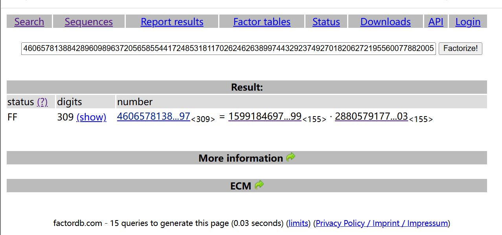

N : 460657813884289609896372056585544172485318117026246263899744329237492701820627219556007788200590119136173895989001382151536006853823326382892363143604314518686388786002989248800814861248595075326277099645338694977097459168530898776007293695728101976069423971696524237755227187061418202849911479124793990722597 e : 354611102441307572056572181827925899198345350228753730931089393275463916544456626894245415096107834465778409532373187125318554614722599301791528916212839368121066035541008808261534500586023652767712271625785204280964688004680328300124849680477105302519377370092578107827116821391826210972320377614967547827619 enc : 38230991316229399651823567590692301060044620412191737764632384680546256228451518238842965221394711848337832459443844446889468362154188214840736744657885858943810177675871991111466653158257191139605699916347308294995664530280816850482740530602254559123759121106338359220242637775919026933563326069449424391192
看到这中没有任何提示的rsa题目补药怕呀，往往只是吓吓你而已
rsa常规流程走一便：

n可以暴力分解！
剩下就好说咯
from Crypto.Util.number import * from gmpy2 import * p =15991846970993213322072626901560749932686325766403404864023341810735319249066370916090640926219079368845510444031400322229147771682961132420481897362843199 q = 28805791771260259486856902729020438686670354441296247148207862836064657849735343618207098163901787287368569768472521344635567334299356760080507454640207003 e = 354611102441307572056572181827925899198345350228753730931089393275463916544456626894245415096107834465778409532373187125318554614722599301791528916212839368121066035541008808261534500586023652767712271625785204280964688004680328300124849680477105302519377370092578107827116821391826210972320377614967547827619 enc = 38230991316229399651823567590692301060044620412191737764632384680546256228451518238842965221394711848337832459443844446889468362154188214840736744657885858943810177675871991111466653158257191139605699916347308294995664530280816850482740530602254559123759121106338359220242637775919026933563326069449424391192 N = 460657813884289609896372056585544172485318117026246263899744329237492701820627219556007788200590119136173895989001382151536006853823326382892363143604314518686388786002989248800814861248595075326277099645338694977097459168530898776007293695728101976069423971696524237755227187061418202849911479124793990722597
phi = (p-1)*(q-1) d = inverse(e, phi) m = pow(enc,d,N) print(long_to_bytes(m))
defsolve_pq(a, b, c): """通过二次方程分解n=p*q :param a: x²系数 (固定为1) :param b: x系数 (n - phi + 1) :param c: 常数项 (n) :return: p, q """ delta = b**2 - 4*a*c if delta < 0: returnNone sqrt_delta = gmpy2.isqrt(delta) if sqrt_delta * sqrt_delta != delta: returnNone p = (-b + sqrt_delta) // (2 * a) q = (-b - sqrt_delta) // (2 * a) return (p, q) if p * q == c elseNone
defwiener_attack(e, n): """维纳攻击主函数 :param e: 公钥e :param n: 模数n :return: 私钥d 或 None """ cf = continued_fraction(e, n) for k, d in gradual_convergents(cf): if k == 0: continue if (e * d - 1) % k != 0: continue phi = (e * d - 1) // k pq = solve_pq(1, n - phi + 1, n) if pq: p, q = pq if p * q == n: return d returnNone
if __name__ == "__main__": # 测试数据（替换为实际参数） n = 460657813884289609896372056585544172485318117026246263899744329237492701820627219556007788200590119136173895989001382151536006853823326382892363143604314518686388786002989248800814861248595075326277099645338694977097459168530898776007293695728101976069423971696524237755227187061418202849911479124793990722597 e = 354611102441307572056572181827925899198345350228753730931089393275463916544456626894245415096107834465778409532373187125318554614722599301791528916212839368121066035541008808261534500586023652767712271625785204280964688004680328300124849680477105302519377370092578107827116821391826210972320377614967547827619 c = 38230991316229399651823567590692301060044620412191737764632384680546256228451518238842965221394711848337832459443844446889468362154188214840736744657885858943810177675871991111466653158257191139605699916347308294995664530280816850482740530602254559123759121106338359220242637775919026933563326069449424391192 d = wiener_attack(e, n) if d: print(f"[+] 私钥d = {d}") m = pow(c, d, n) print(f"[+] 明文 = {libnum.n2s(int(m)).decode()}") else: print("[-] 攻击失败，可能d不满足维纳条件")
2.command
题目
from secret import flag from Crypto.Util.number import *
p = getPrime(1024) q1 = getPrime(1024) q2 = getPrime(1024)
n1 = p * q1 n2 = p * q2 e = 0x10001
m = bytes_to_long(flag) c1 = pow(m, e, n1) c2 = pow(m, e, n2)
deffind_correct_password(): hash_template = "2aa90dc*46aa5d0*baedc4a*13e4c0a6*91bf6*2" fixed_positions = [] for idx, char inenumerate(hash_template): if char != '*': fixed_positions.append((idx, char)) printable_chars = [chr(c) for c inrange(32, 127)]
count = 0 for c1 in printable_chars: for c4 in printable_chars: for c6 in printable_chars: for c10 in printable_chars: password = f"{c1}ha{c4}i{c6}_go{c10}d" sha1_hash = hashlib.sha1(password.encode('utf-8')).hexdigest() match = True for (pos, target_char) in fixed_positions: if sha1_hash[pos] != target_char: match = False break ifmatch: print(f"找到正确密码：{password}") print(f"对应的SHA1哈希：{sha1_hash}") return password count += 1
returnNone correct_pwd = find_correct_password() if correct_pwd: print(f"\nflag{{{correct_pwd}}}")
5.coppersmith
敬请期待 QwQsagemath 没整明白 等笔者好消息吧
from secret import flag from Crypto.Util.number import *
m = bytes_to_long(flag)
p = getPrime(512) q = getPrime(512) N = p * q e = 7
from gmpy2 import * from Crypto.Util.number import *
c = 77910349061944763568299396394184337520861899083817490010678766043320388729842050532499742515132299125221386423487817013007167101659632771120727305169401713711755701139645391311421914142639007159020652755880068954988225402131362184667436752944331368809243280933094976267099141065017878199319211904257432652753 n = 99887986204824691113457754897953425406993412586030259044004283966194202433452866024995465248688896193125819761385921365388030307691682145106269184432165936577174730773115650122496935533603059557681592007428920955897003476296682566264772005134125852663260971355535474414913501328212769545952135420770881499467 p = 12672576027810761975840956553905924324108169270520824932988309977042643967090398117355253953195633095326913407044418517938976916071656473263683948565757952
PR.<x> = PolynomialRing(Zmod(n))
f = p+x res = f.small_roots(X=2^100, beta=0.4)
p = int(res[0]) + p q = n // p print(q) d = inverse_mod(7, (p-1)*(q-1)) m = power_mod(c, d, n) print(long_to_bytes(m))
(p(x) = (p_h + x) \mod n)。
Coppersmith 方法的能力是：如果多项式在模 n 的某个因数下有一个 “足够小的根”，就能把这个根求出来。
res = f.small_roots(X=2^100, beta=0.4)
参数解释：
x：X 是小根的上界，即告诉算法：“我们要找的根 (x_0) 满足 (|x_0| < X)”。
作用beta 是因数占比参数，表示 N 的素因子 p 满足 (p \geq N^{\text{beta}})。